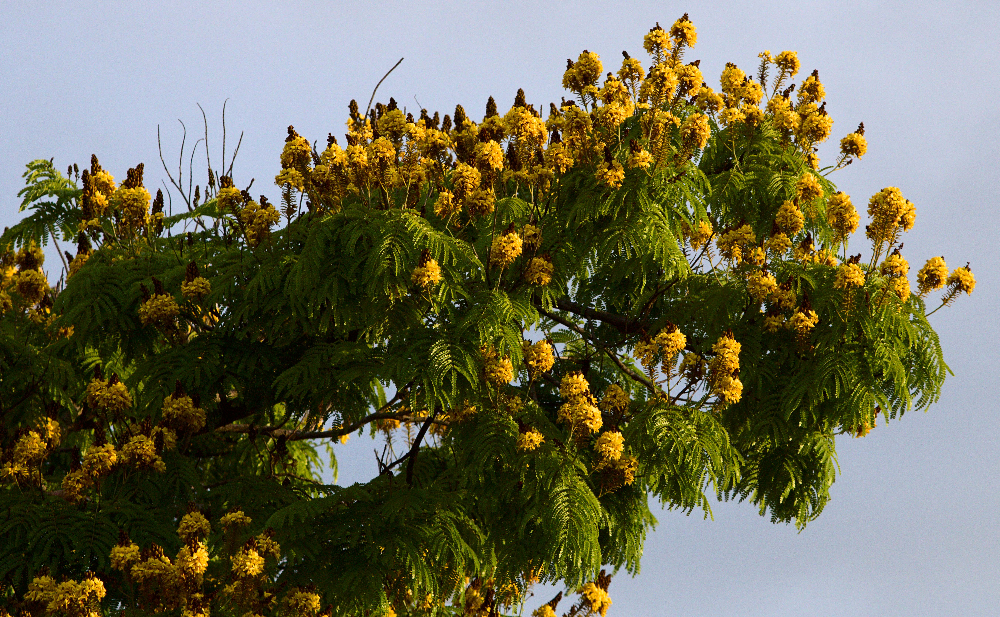
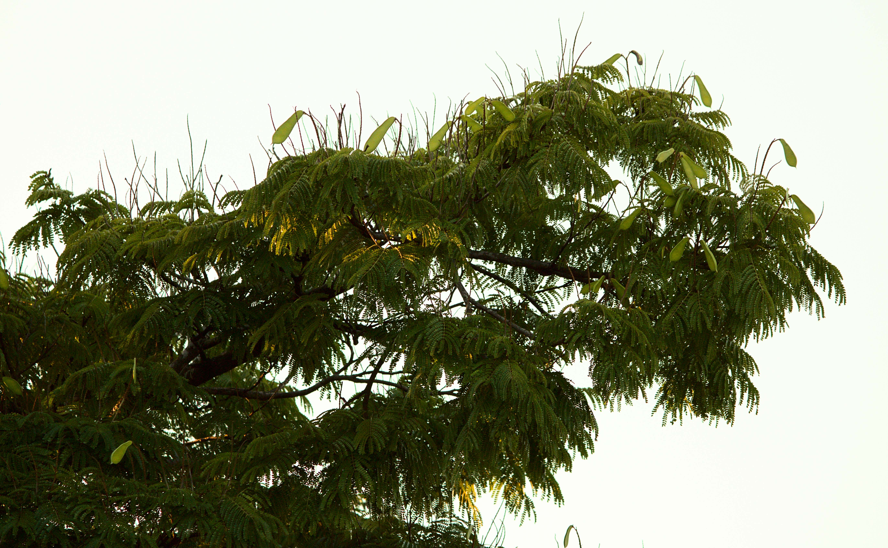
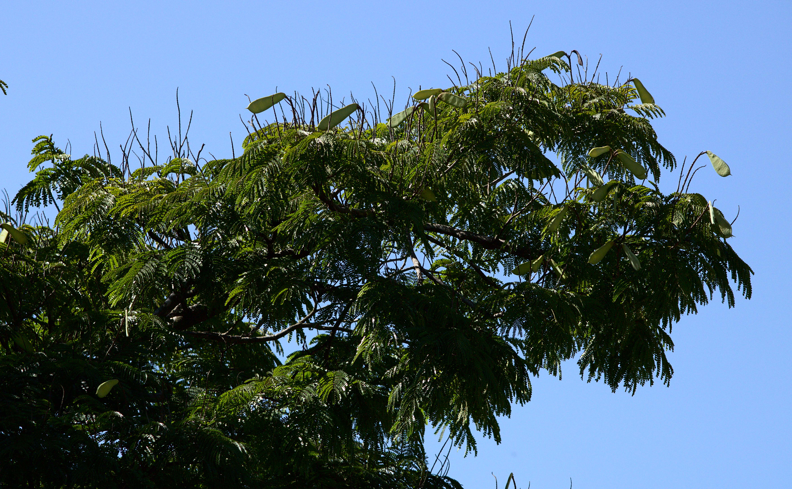

Sibipiruna

A sibipiruna é árvore nativa da Mata Atlântica, a qual tem forte parentesco com o icônico pau-brasil. A partir de agosto, suas fartas flores amarelas ajudam o compor o mosaico de cores nas metrópoles dos Mares de Morros Florestados brasileiros. Especialmente em São Paulo, é amplamente utilizada no ajardinamento urbano. Foi assim que começou a crônica visual aqui exibida.
Trata-se do registro, durante os meses de pandemia, da passagem do tempo através das mudanças de uma sibipiruna urbana ao longo das estações. Uma foto por dia, independente da meteorologia. Às vezes uma foto pela manhã, outra pela tarde. Ao fim do período, uma quantidade absurda de material a ser tratado. Bastava classificar, catalogar e compor algo que formasse uma narrativa coerente. Aí que cheguei ao estado atual: uma foto para cada dia de solstício e equinócio, complementadas por intervalos mensais entre um e outro. Eis o mosaico que mostra as formas tão multifacetadas dessa espécie que compõe a paisagem do Brasil Atlântico junto a outras mais discretas e exuberantes.
E por que essa sibipiruna? Anteriormente, havia feito o mesmo projeto com um outro espécime, mas com menos consistência. A diferença é que essa outra sibipiruna em questão tinha algo de especial: foi plantada nos idos da década de 1980 pela minha avó.
Uma baiana, junto aos seus filhos, finalmente se instala num bairro nascente, nas franjas da expansão da metrópole. Simbolicamente, depois de conseguir sair dos cortiços , são os primeiros a se instalar nesse subúrbio inexplorado. Mais simbolicamente ainda, essa matriarca vinda do agreste baiano escolhe para plantar em sua calçada uma das árvore mais icônicas da Mata Atlântica. Mata esta que, tão versátil em sua natureza, percorre todo o litoral brasileiro, desde o Rio Grande do Norte até o Rio Grande do Sul, adentrando o interior do continente pelo rio Paraná, onde penetra as terras roxas até chegar à Tríplice Fronteira entre o Paraguay, a Argentina e o Brasil.
Tão versátil como essas selvas ombrófilas, amantes das sombras projetadas sob suas copas, são os milhões de baianos, pernambucanos, alagoanos, sergipanos, paraibanos, potiguares, cearenses, maranhenses e piauienses que deixaram e deixam suas terras em direção a horizontes inexplorados, como outrora fora este subúrbio onde se enraizou a sibipiruna. O semi-árido mais povoado do planeta deixou muitos filhos e filhas.
"No jogo das migrações internas ocorridas no Brasil, desde meados do século XIX até hoje, o êxodo de nordestinos para as diversas regiões do país tem a força de uma diáspora." (AB’SABER, 2021, p. 92)
Versáteis como a mata, eu também sou filha dessa diáspora. Mas e o que aconteceu com a árvore? Foi condenada pela prefeitura, sem ter cometido crime algum, porque estava infestada de cupins e em iminente risco de queda. A sibipiruna que permitiu a compilação deste projeto era uma outra que estava do outro lado da rua, talvez plantada na mesma época da condenada.
Ao menos, em seu lugar, foi plantado um ypê-amarelo que já revelou suas cores na segunda Primavera em que estava nesse solo. O chão continuará forrado por flores que têm as mesmas cores de antes. A gente seca, a gente enfrente a seca. Volta a meia, a gente floresce com a chuva. E se os cupins nos corroem por dentro? Que tenhamos, ao menos, deixado nossas sementes. Afinal, não se pode viver a vida inteira de uma vez: ela é cíclica como as estações.
AB'SABER, Aziz. Os Domínios da Natureza no Brasil: Potencialidades Paisagísticas. 8ed. São Paulo: Ateliê Editorial, 2021.




